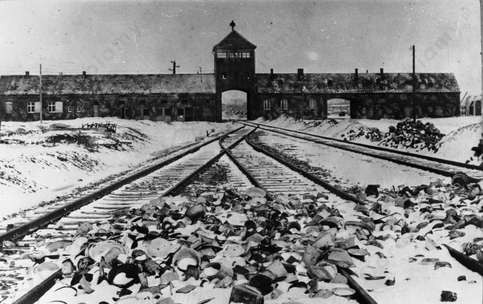

1) Przyczyny postawy sojuszników Polski we wrześniu 1939 r.:
2) Przykładowa odpowiedź: Sojusz Polski z Niemcami lub ZSRS, nie był możliwy, ponieważ:
Przyczyny klęski Polski w wojnie obronnej we wrześniu 1939 r.:
- zastosowanie przez Niemców taktyki wojny błyskawicznej,
- lepsze zaplecze wojskowe wroga - agresorzy, posiadali silny atut w postaci wojsk pancernych, rozbudowanego lotnictwa, a także przewagi ogniowej na morzu, dlatego tak szybko posuwali się w głąb naszego kraju,
- przestarzała organizacja wojska polskiego,
- względy strategiczne - Polska została zaatakowana ze wszystkich stron,
- osamotnienie państwa polskiego w walce z najeźdźcami,
- bezczynność zachodnich sojuszników,
- oparcie działań zbrojnych na obronie - Naczelny Wódz marszałek Edward Rydz-Śmigły główny cel walk sformułował następująco: "nie dać się rozbić przed rozpoczęciem działań sprzymierzonych na Zachodzie",
- w Polsce w pierwszych dniach kampanii wrześniowej nastąpiło opóźnienie mobilizacji powszechnej - zdołano zmobilizować tylko ok. 70% planowanych sił polskich. Reszta żołnierzy i dowódców nie zdążyła dotrzeć do swoich jednostek, nastąpiło również zerwanie łączności,
- zbyt późno opracowany plan obrony,
- błędne założenie polskiego dowództwa o rozmieszczeniu wojsk wzdłuż granic państwa,
- prowadzenie przez Niemcy wojny totalnej - niszczono nie tylko węzły komunikacyjne, punkty łączności czy ważne jednostki wojskowe, ale także miasta, wsie i drogi, a podczas ataków ginęli niewinni cywilne,
- konieczność prowadzenia od 17 września 1939 r. walki na dwa fronty,
- wyjazd polskich władz do Rumunii,
- klęska była nieunikniona po tym, jak Niemcy zawarły układ z ZSRS.
Pancernik Schleswig-Holstein w gdańskim porcie, źródło zdjęcia: Wikimedia Commons.
Etapy niemieckich podbojów w Europie w latach 1939-1941:
Przebieg działań zbrojnych na froncie wschodnim w latach 1941-1944:
22.06.1941 r. nastąpiła niemiecka agresja na Związek Radziecki. Stanowiła ona początek Wielkiej Wojny Ojczyźnianej. Wojska niemieckie szybko przesuwały się na wschód wobec sowieckiego nieprzygotowania. Niemcy uderzyli w trzech kierunkach: północnym (na Leningrad), środkowym (na Białoruś) i południowym (na Kaukaz). W lipcu 1941 r. Wermacht zajął Mińsk i Smoleńsk, następnie wkroczył do Kijowa, a na północy rozpoczęło się oblężenie Leningradu. Trwało ono 900 dni. Kosztowało życie ok. miliona ofiar wśród ludności cywilnej, a dostawy żywności organizowane były zimą przez zamarznięte jezioro Ładoga.
W 1942 r. Rzesza rozpoczęła nową ofensywę. Była ona skierowana w kierunku południowo-wschodnim. Niemcy prędko zajęli Krym i Kaukaz, następnie ruszyli na Stalingrad. Od sierpnia 1942 r. do lutego 1943 r. trwała bitwa stalingradzka. Zakończyła się ona kapitulacją Niemiec. Sowieci przystąpili do kontrofensywy. W lipcu 1943 r. doszło do bitwy na łuku kurskim. Od tego momentu nastąpiło przecięcie inicjatywy przez Armię Czerwoną, która sforsowała Dniepr, wyzwoliła Kijów, a w styczniu 1944 r. Rosjanie przekroczyli dawną granicę Polski. W maju 1944 r. padł Sewastopol, a w październiku nastąpiło przemianowanie frontów radzieckich na białoruski i ukraiński, co wynikało z przejścia Armii Czerwonej do kontrofensywy.
Już pierwszego dnia wojny, Niemcy rozpoczęli prześladowania ludności żydowskiej. Osobom żydowskiego pochodzenia nakazano noszenie opasek z gwiazdą Dawida, które miały wyróżniać ich spośród pozostałej części społeczeństwa. Żydów szykanowano i ośmieszano. Wkrótce (od 1940 r.) przystąpiono do umieszczania ludności żydowskiej w specjalnie wydzielonych obszarach, zwanych gettami, gdzie panował głód i wybuchały epidemie. Za ich opuszczenie groziła kara śmierci. Jesienią 1941 r. Niemcy podjęli decyzję o "ostatecznym rozwiązaniu kwestii żydowskiej", co było równoznaczne z wprowadzeniem w życie planu zagłady wszystkich europejskich Żydów. Szczegóły tych nieludzkich planów opracowano 20 I 1942 r. na konferencji w Wannsee, nieopodal Berlina. Całym przedsięwzięciem dowodził niemiecki zbrodniarz - Adolf Eichmann. Akcja eksterminacji, prowadzona w latach 1942-1943, polegała na wywożeniu Żydów do obozów zagłady, gdzie mordowano ich przy pomocy gazu - cyklonu B oraz spalin samochodowych. Tego typu obozy powstały w Treblince, Bełżcu, Chełmie nad Nerem, Sobiborze, Majdanku i Brzezince. W wyniku Holokaustu śmierć poniosło 6 mln europejskich Żydów, z czego połowę stanowili Żydzi zamieszkujący ziemie polskie.

Tory kolejowe, wartownia i brama główna prowadząca do Auschwitz Birkenau, źródło zdjęcia: Wikimedia Commons.
|
Konferencja w Teheranie 28 listopada - 1 grudnia 1943 r. |
Konferencja w Jałcie 4 lutego - 11 lutego 1945 r. |
Konferencja w Poczdamie 17 lipca - 2 sierpnia 1945 r. |
|
|
|
| Postanowienia dotyczące Polski i Polaków | ||
|
|
|
Źródło zdjęć: Wikimedia Commons.
Przyczyny użycia bomby atomowej przez USA w 1945 r.:
Skutki użycia bomby atomowej przez USA w 1945 r.:
Japoński minister spraw zagranicznych Mamoru Shigemitsu podpisuje akt bezwarunkowej kapitulacji Japonii, źródło zdjęcia: Wikimedia Commons.